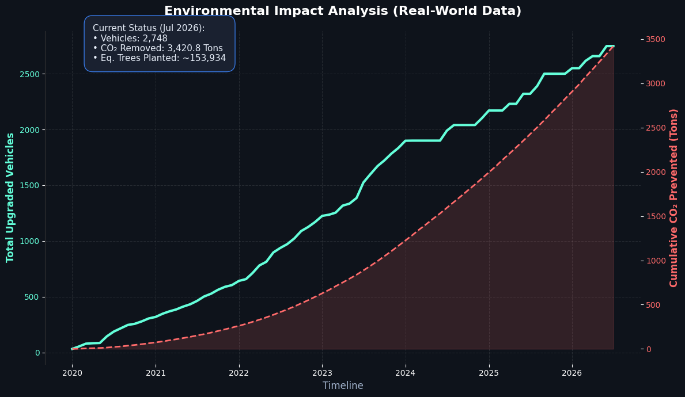

From garage prototype to 2,500+ units shipped globally.
Role: Lead Engineer & Founder
Tools: Marlin FW, C++, SolidWorks, MKS Eagle (32-bit), TMC2209
I identified a niche market for diesel engine intercooler seals made from high-performance polyurethane. However, standard FDM printers could not handle soft TPU (Shore 65A) at production speeds—the filament would buckle and jam in the extruder gear path.
Instead of buying expensive industrial printers, I engineered a custom solution:
The system achieved reliable 24/7 operation with near-zero failure rate.
Data visualized using Python (Pandas/Matplotlib) based on sales logs & fleet mileage assumptions.

Environment: The product restores airtight intake systems, proven to reduce fuel consumption by ~15% and cut CO2 emissions (approx. 770 tons annually across the fleet).